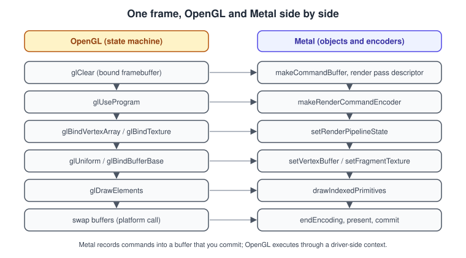
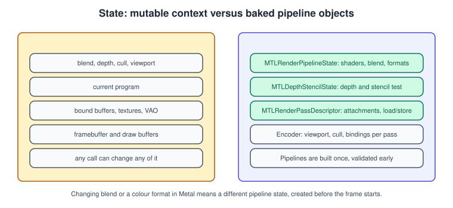
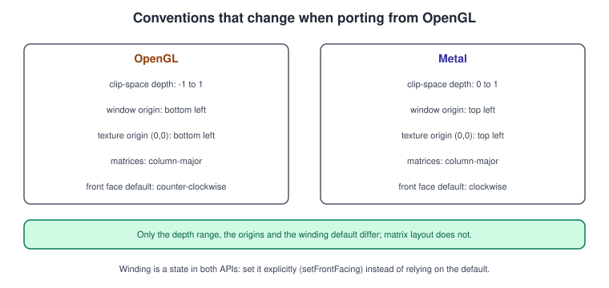
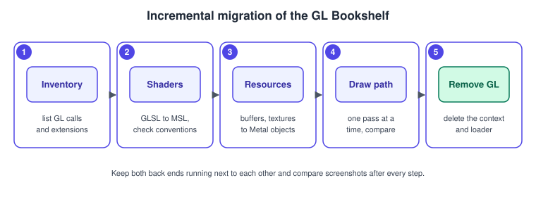

Migrating from OpenGL
|
This content was generated with the assistance of AI and should be verified against the official documentation before being relied on in production. |
OpenGL and OpenGL ES have been deprecated on Apple platforms since iOS 12 and macOS 10.14, and OpenGL on the Mac is frozen at version 4.1. They still run, but they receive no new features. A renderer that talks to Metal directly gains the things OpenGL cannot offer on Apple hardware: predictable CPU cost, explicit control of tile memory and load and store actions, compute and mesh shaders, ray tracing, MetalFX and all of the tools in Debugging and Profiling.
The facts were checked in November 2026. The target documented is Metal on the 26 operating systems (Metal 4) with Xcode 27 and Swift 6.4; the code in this page uses the Metal 3 style of recording (command queue, command buffer, encoder) that runs on every Metal-capable device and that Metal 4 adopts incrementally. The source side is OpenGL 4.1 core and OpenGL ES 3.0, the versions that existed on Apple platforms.
This page is the Metal side of a pair. The OpenGL sub-section describes the old API in full; start from OpenGL ES on iOS and macOS for Apple’s history of it and OpenGL in 2026 for the case for and against staying. The general comparison with Vulkan and WebGPU is in Porting to Vulkan, Metal and WebGPU, and translation layers that avoid a rewrite are in Cross-Platform Translation Layers. In the running example, this page ports the first textured step of the Bookshelf GL project (the book cover quad of Textures and Samplers) to Metal.
Decide first: rewrite, interoperate or translate
| Option | When it fits | Cost |
|---|---|---|
Rewrite the renderer in Metal |
A long-lived app or game that targets Apple platforms and wants the best performance and the new features. |
The most work, the best result. This page. |
Migrate in steps with interoperability |
A large renderer that cannot stop for months. Apple documents mixing Metal and OpenGL in one view through an interoperable texture. |
Both back ends alive for a while; a shared texture must be synchronised. |
Translate (ANGLE or similar) |
A portable codebase that should keep one OpenGL ES code path everywhere. |
No access to Metal-only features; an extra layer to maintain. See the translation layers page. |
Apple provides two samples for the migration: Migrating OpenGL code to Metal (associated with WWDC 2019 session 611) and Mixing Metal and OpenGL rendering in a view. The first shows how to replace an app’s deprecated OpenGL code with Metal; the second shows the interoperable texture that lets both APIs draw into one view during the transition.
One frame, two APIs

The shape of the frame changes more than any single call. In OpenGL you bind things and call draw functions against an implicit current context, and the driver tracks, validates and sometimes recompiles state behind your back. In Metal you describe the work up front in immutable objects, record it into a command buffer through an encoder and submit it. Most of the migration is finding which Metal object holds the state that a block of GL calls used to set.
The state model

-
Pipeline state (
MTLRenderPipelineState) bundles the vertex and fragment functions, the vertex layout, the colour and depth pixel formats, blending and the sample count. In OpenGL these were separate calls (glUseProgram,glBlendFuncand others); changing any of them in GL could silently force the driver to build a new internal program at draw time, which produced the hitches that Metal moves to load time. -
Depth and stencil state (
MTLDepthStencilState) is its own immutable object. -
The render pass descriptor replaces the bound framebuffer, clear calls and discard hints.
-
The encoder holds what stays dynamic: viewport, scissor, cull mode, front-face winding, bound buffers, textures and samplers.
Build every pipeline for every combination you will use before the frame loop. A shader that was "the same program with blending on" in GL is a second pipeline state in Metal. See The Metal Render Pipeline and Shader Compilation and Pipeline Caching.
The concept map
| OpenGL or OpenGL ES | Metal | Notes |
|---|---|---|
|
|
There is no "current context": every call goes through an object. See MetalKit, MTKView and SwiftUI. |
|
|
Clearing is part of the pass, not a command. |
|
|
Viewport z range is 0 to 1. |
|
|
Compile shaders at build time into a metallib; create pipeline states at load. |
Vertex array object, |
|
The descriptor is part of the pipeline state. See Buffers and Vertex Descriptors. |
|
|
Shared storage: CPU and GPU see the same memory. Write the region the GPU is not reading (frames in flight). |
|
|
The index buffer is passed to the draw call. |
|
|
|
Shader storage buffers |
Buffers in the |
Read-write by default when declared without |
|
|
Textures have usage flags; set only what you need. |
|
|
Or load pre-built mip levels. |
|
|
Samplers are independent objects, as with |
Framebuffer object, renderbuffer |
|
There are no renderbuffers; everything is a texture. |
|
|
|
|
|
Set on the encoder with |
|
Blend fields of the colour attachment of the pipeline descriptor |
A pipeline state per blend configuration. |
|
|
The default winding differs (below). |
|
|
Never block the CPU in the frame. See Synchronization and Barriers. |
|
A blit to a buffer, then read after completion, or |
Synchronise first; read-backs stall the pipeline. |
Occlusion and timer queries |
Visibility result buffer, counter sample buffers |
|
Compute shaders |
Compute kernels |
Same model; see Compute Kernels. |
Geometry and tessellation shaders |
Mesh shaders, Metal tessellation, or compute |
See Mesh Shaders and Tessellation. |
Transform feedback |
A compute kernel that writes a buffer |
Metal has no equivalent fixed-function stage. |
Extensions and version checks |
|
|
|
API validation, shader validation, object |
See the debugging page. |
|
|
Present is a command in the buffer. |
Conventions that break ports silently

The build is green, the shaders run, and the picture is wrong. These are the usual reasons:
-
Clip-space depth. OpenGL maps depth to -1 to 1, Metal to 0 to 1. A projection matrix built for OpenGL clips away or mangles geometry, and fixed-bias shadow maps shift. Use a zero-to-one projection (below).
-
Origins. The framebuffer and viewport origin and the texture origin (0, 0) are bottom-left in OpenGL and top-left in Metal. An image that appears upside down needs its texture loaded with a bottom-left origin or its UV flipped.
gl_FragCoordhas its origin at the bottom left; the Metal[[position]]has it at the top left. -
Winding. OpenGL’s default front face is counter-clockwise; Metal’s is clockwise. Call
setFrontFacing(.counterClockwise)when you keep your meshes, or flip the setting globally, and always set it explicitly. -
Matrices. Both use column-major storage, so the matrices you built for GL (GLM, for example) can be copied unchanged if their layout is column-major and the depth range is converted.
-
Uniform layout. A
vec3in a GL uniform block (std140) is padded to 16 bytes; in MSLfloat3is also 16 bytes in a struct, andpacked_float3is 12. Swift’sSIMD3<Float>has a 16-byte stride. Make the CPU struct and the MSL struct match field for field, ideally by sharing one header (see The Metal Shading Language). -
sRGB. OpenGL’s sRGB framebuffer and texture conversion are enabled by format and by
GL_FRAMEBUFFER_SRGB; in Metal you choose an_srgbpixel format for the texture and for the drawable. A washed-out or too-dark scene is a missed or doubled conversion.
A zero-to-one right-handed perspective matrix for Swift:
import simd
/// Right-handed view space (camera looks down -z), clip-space depth 0...1 as Metal expects.
func perspective(fovY: Float, aspect: Float, near: Float, far: Float) -> simd_float4x4 {
let y = 1 / tan(fovY * 0.5)
let x = y / aspect
let z = far / (near - far)
return simd_float4x4(columns: (
SIMD4<Float>(x, 0, 0, 0),
SIMD4<Float>(0, y, 0, 0),
SIMD4<Float>(0, 0, z, -1),
SIMD4<Float>(0, 0, z * near, 0)))
}Source: Metal: MTLViewport
If a library such as GLM generates your matrices, its zero-to-one variants (the _ZO functions or the GLM_FORCE_DEPTH_ZERO_TO_ONE
definition) give the same result. The theory of the spaces is in
Coordinate Spaces and Transforms and the GL side in
Cameras and Projection.
GLSL to MSL
MSL is based on C++, so most of a GLSL shader
translates by renaming. The inputs and outputs change the most: GLSL’s in, out and uniform become function parameters
with attributes.
| GLSL | MSL |
|---|---|
|
|
|
A struct field with |
|
A struct field with |
|
|
|
|
|
A fragment output with |
|
|
|
|
|
|
|
The return value of the fragment function, or a struct with |
|
|
|
|
|
|
|
|
|
|
|
|
mix, clamp, smoothstep, fract, step, dot, cross, normalize, reflect and pow keep their names. Two
semantic differences deserve attention: integer division and shifts follow C rules (undefined for division by zero), and MSL
needs half or float to be chosen on purpose (see Performance Best Practices).
The OpenGL side is in The GLSL Language and
Shaders and Programs; the broader comparison is in
Shading Languages Landscape.
A textured quad, side by side
The GL version (OpenGL 4.1 core) of the book cover quad:
// vertex shader
#version 410 core
layout(location = 0) in vec2 aPos;
layout(location = 1) in vec2 aUV;
uniform mat4 uMVP;
out vec2 vUV;
void main() {
vUV = aUV;
gl_Position = uMVP * vec4(aPos, 0.0, 1.0);
}
// fragment shader
#version 410 core
in vec2 vUV;
uniform sampler2D uCover;
out vec4 fragColor;
void main() {
fragColor = texture(uCover, vUV);
}// per frame
glClearColor(0.12f, 0.1f, 0.09f, 1.0f);
glClear(GL_COLOR_BUFFER_BIT);
glUseProgram(program);
glUniformMatrix4fv(locMVP, 1, GL_FALSE, &mvp[0][0]);
glActiveTexture(GL_TEXTURE0);
glBindTexture(GL_TEXTURE_2D, coverTexture);
glUniform1i(locCover, 0);
glBindVertexArray(vao);
glDrawElements(GL_TRIANGLES, 6, GL_UNSIGNED_INT, nullptr);The MSL equivalent of both shaders, in one file:
#include <metal_stdlib>
using namespace metal;
struct VertexIn {
float2 position [[attribute(0)]];
float2 uv [[attribute(1)]];
};
struct VertexOut {
float4 position [[position]];
float2 uv;
};
vertex VertexOut quad_vertex(VertexIn in [[stage_in]],
constant float4x4 &mvp [[buffer(1)]])
{
VertexOut out;
out.position = mvp * float4(in.position, 0.0, 1.0);
out.uv = in.uv;
return out;
}
fragment float4 quad_fragment(VertexOut in [[stage_in]],
texture2d<float> cover [[texture(0)]],
sampler coverSampler [[sampler(0)]])
{
return cover.sample(coverSampler, in.uv);
}And the renderer. It is the complete Metal 3-style version of the GL frame above: a vertex descriptor for the VAO, an
index buffer, a texture loaded with MTKTextureLoader, a sampler object, a pipeline state, and a draw callback that records
one pass. The asset named BookCover is the cover texture of bookshelf.glb
(bookshelf-cover.png) added to the asset catalog.

import MetalKit
import simd
final class QuadRenderer: NSObject, MTKViewDelegate {
private let device: MTLDevice
private let queue: MTLCommandQueue
private let pipeline: MTLRenderPipelineState
private let vertexBuffer: MTLBuffer
private let indexBuffer: MTLBuffer
private let texture: MTLTexture
private let sampler: MTLSamplerState
private var angle: Float = 0
private var aspect: Float = 1
init?(view: MTKView) {
guard let device = MTLCreateSystemDefaultDevice(),
let queue = device.makeCommandQueue(),
let library = device.makeDefaultLibrary() else { return nil }
self.device = device
self.queue = queue
view.device = device
view.colorPixelFormat = .bgra8Unorm_srgb
view.clearColor = MTLClearColor(red: 0.12, green: 0.1, blue: 0.09, alpha: 1)
// The VBO: x, y, u, v, exactly as in the GL project (texture origin at the bottom left).
// The cover is loaded with a bottom-left origin below, so these UVs do not change.
let vertices: [Float] = [
-0.5, -0.75, 0, 0,
0.5, -0.75, 1, 0,
0.5, 0.75, 1, 1,
-0.5, 0.75, 0, 1,
]
let indices: [UInt32] = [0, 1, 2, 0, 2, 3]
guard let vb = device.makeBuffer(bytes: vertices, length: vertices.count * 4, options: .storageModeShared),
let ib = device.makeBuffer(bytes: indices, length: indices.count * 4, options: .storageModeShared)
else { return nil }
vertexBuffer = vb
indexBuffer = ib
// The VAO: attribute 0 is a float2 at offset 0, attribute 1 a float2 at offset 8, stride 16.
let vertexDescriptor = MTLVertexDescriptor()
vertexDescriptor.attributes[0].format = .float2
vertexDescriptor.attributes[0].offset = 0
vertexDescriptor.attributes[0].bufferIndex = 0
vertexDescriptor.attributes[1].format = .float2
vertexDescriptor.attributes[1].offset = 8
vertexDescriptor.attributes[1].bufferIndex = 0
vertexDescriptor.layouts[0].stride = 16
// The program, blend and framebuffer format: one immutable object.
let descriptor = MTLRenderPipelineDescriptor()
descriptor.vertexFunction = library.makeFunction(name: "quad_vertex")
descriptor.fragmentFunction = library.makeFunction(name: "quad_fragment")
descriptor.vertexDescriptor = vertexDescriptor
descriptor.colorAttachments[0].pixelFormat = view.colorPixelFormat
guard let pipeline = try? device.makeRenderPipelineState(descriptor: descriptor) else { return nil }
self.pipeline = pipeline
// glTexImage2D + glGenerateMipmap + sRGB: the loader does all three.
let loader = MTKTextureLoader(device: device)
guard let texture = try? loader.newTexture(name: "BookCover", scaleFactor: 1, bundle: nil, options: [
.SRGB: true,
.generateMipmaps: true,
.origin: MTKTextureLoader.Origin.bottomLeft,
]) else { return nil }
self.texture = texture
// glTexParameter: filtering and wrapping live in a sampler object.
let samplerDescriptor = MTLSamplerDescriptor()
samplerDescriptor.minFilter = .linear
samplerDescriptor.magFilter = .linear
samplerDescriptor.mipFilter = .linear
samplerDescriptor.sAddressMode = .clampToEdge
samplerDescriptor.tAddressMode = .clampToEdge
guard let sampler = device.makeSamplerState(descriptor: samplerDescriptor) else { return nil }
self.sampler = sampler
super.init()
}
func mtkView(_ view: MTKView, drawableSizeWillChange size: CGSize) {
aspect = Float(size.width / max(size.height, 1))
}
func draw(in view: MTKView) {
guard let pass = view.currentRenderPassDescriptor, // framebuffer, clear, store
let drawable = view.currentDrawable,
let commandBuffer = queue.makeCommandBuffer(),
let encoder = commandBuffer.makeRenderCommandEncoder(descriptor: pass) else { return }
angle += 0.01
let model = simd_float4x4(simd_quatf(angle: angle, axis: [0, 1, 0]))
var view4 = matrix_identity_float4x4
view4.columns.3 = SIMD4<Float>(0, 0, -2.5, 1)
var mvp = perspective(fovY: .pi / 3, aspect: aspect, near: 0.1, far: 10) * view4 * model
encoder.setRenderPipelineState(pipeline) // glUseProgram + blend + formats
encoder.setFrontFacing(.counterClockwise) // the GL default, set explicitly
encoder.setCullMode(.none)
encoder.setVertexBuffer(vertexBuffer, offset: 0, index: 0) // glBindVertexArray
encoder.setVertexBytes(&mvp, length: MemoryLayout<simd_float4x4>.stride, index: 1) // glUniformMatrix4fv
encoder.setFragmentTexture(texture, index: 0) // glBindTexture
encoder.setFragmentSamplerState(sampler, index: 0)
encoder.drawIndexedPrimitives(type: .triangle, indexCount: 6, indexType: .uint32,
indexBuffer: indexBuffer, indexBufferOffset: 0) // glDrawElements
encoder.endEncoding()
commandBuffer.present(drawable) // swap buffers
commandBuffer.commit()
}
}Use it from SwiftUI through a representable, as described in
MetalKit, MTKView and SwiftUI. The perspective function is the one
from the previous section. The pass has no depth attachment because the quad needs none; add a depth texture and a
MTLDepthStencilState when the shelf comes in, mirroring glEnable(GL_DEPTH_TEST).
Resources: buffers, textures and uniforms
Buffers. A GL buffer upload becomes a makeBuffer call. On Apple silicon the CPU and GPU share memory, so shared storage is
the default choice for data that changes often, and private storage (filled through a blit) for static data that benefits from
GPU-only layouts. Data that changes per frame needs one copy per frame in flight, as in
Performance Best Practices. Small uniform data (under about 4 KB)
can go through setVertexBytes and setFragmentBytes without a buffer, as in the example above.
Textures. MTKTextureLoader loads image files and asset catalog entries. Its options replace the
glTexParameter and glPixelStorei choices you used to make at upload time: .SRGB for the colour space, .generateMipmaps,
and .origin for the vertical flip. Pre-compressed ASTC textures are the right choice for shipping (see
Textures and Samplers); PVRTC is deprecated.
Uniform buffers. A GL uniform block with std140 rules becomes a struct in the constant address space. Share the struct
definition between Swift and MSL through a bridging header, and check offsets in a GPU capture the first time.
Framebuffers. An FBO becomes a render pass descriptor whose attachments are textures. The attachment’s loadAction and
storeAction are the choice OpenGL never gave you, and they decide the bandwidth of the pass: a depth buffer that is not
read later should be .dontCare on store, and a transient attachment can be memoryless (see
Render Passes and Load/Store Actions and
Framebuffers and Render to Texture).
An incremental plan

-
Inventory. List every GL call, extension and render target the app uses, and group them into frames, passes and resources. The calls that have no direct equivalent (transform feedback, geometry shaders,
glReadPixelsevery frame) need a design decision before code. -
Shaders. Translate GLSL to MSL, applying the conventions above, and build them into a metallib. Compile warnings in MSL are often the first sign of a precision or address-space mistake.
-
Resources. Create Metal buffers and textures from the same source data. Check the byte layout, the colour space and the origin.
-
Passes. Migrate the renderer one pass at a time. Keep both back ends runnable, render the same frame with each and compare screenshots after every step. During the transition, share a texture between the two APIs as Apple’s mixing sample shows.
-
Remove OpenGL. Delete the context, the loader and the GL calls, switch the view to
MTKView, and enable the Metal debug tools on the finished renderer.
Common mistakes
-
A projection matrix still in the OpenGL -1 to 1 depth range.
-
An upside-down texture or a flipped scene because the origin or the UVs were not converted.
-
Culling the wrong side because the front-face winding was left at the Metal default.
-
Creating a pipeline state per draw call, or per blend change, inside the frame loop.
-
Reusing one uniform buffer across frames in flight and overwriting data the GPU is still reading.
-
A
float3field in a CPU struct sized as three floats; useSIMD3<Float>orpacked_float3consistently on both sides. -
Calling
glReadPixels-style read-backs (getBytesright after commit) without waiting for completion. -
Forgetting that sRGB conversion is chosen by pixel format.
-
Migrating shaders without a way to check them: capture the same frame in both APIs (see Debugging and Tools) and compare.
Performance notes
Most of the CPU savings come from doing at load time what OpenGL did at draw time: creating pipelines, validating state and choosing formats. Most of the GPU savings come from the load and store actions and memoryless attachments, which OpenGL could only guess at. Do not expect speed from a line-by-line port that keeps the old structure (many small passes, a framebuffer resolve after every effect, per-draw uniform updates): restructure around passes and argument buffers, and profile with the tools in Debugging and Profiling.
What changed compared with older guides
-
Metal Programming Guide (CLA), chapter 1 presents OpenGL ES as the default graphics API on iOS that Metal is gradually replacing; today OpenGL and OpenGL ES are deprecated since iOS 12 and macOS 10.14, and Metal is the supported path.
-
CLA is written for Metal 2, Swift 4 and Xcode 9 and uses
device.newDefaultLibrary(); Metal by Tutorials (MBT) teaches Metal 3. Current code usesmakeDefaultLibrary(), and Metal 4 adds command allocators, argument tables and explicit barriers, which this page’s renderer does not need. -
MTLFeatureSetqueries in older code are replaced bysupportsFamily(_:)(iOS 16 and macOS 13). -
On the Mac, the Intel-era assumptions (managed storage, discrete GPU upload heaps) are obsolete on Apple silicon; see GPU Architecture and TBDR.
See also
-
Hello Triangle: the GL starting point, and Hello Triangle with Metal 4 for the Metal 4 start.
-
Uniforms, UBOs and SSBOs and Buffers and Vertex Specification.